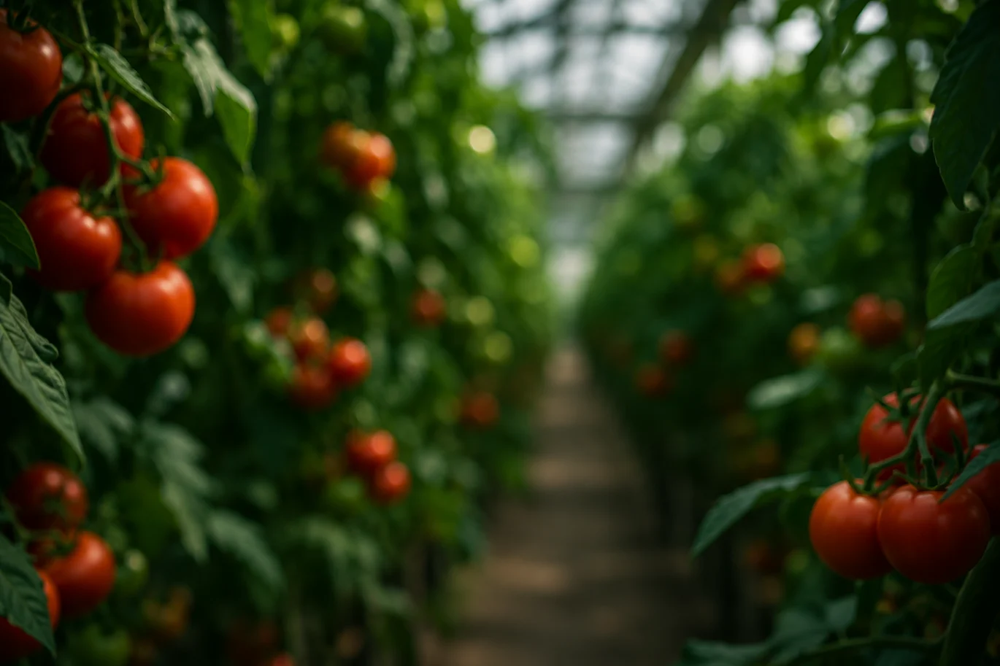
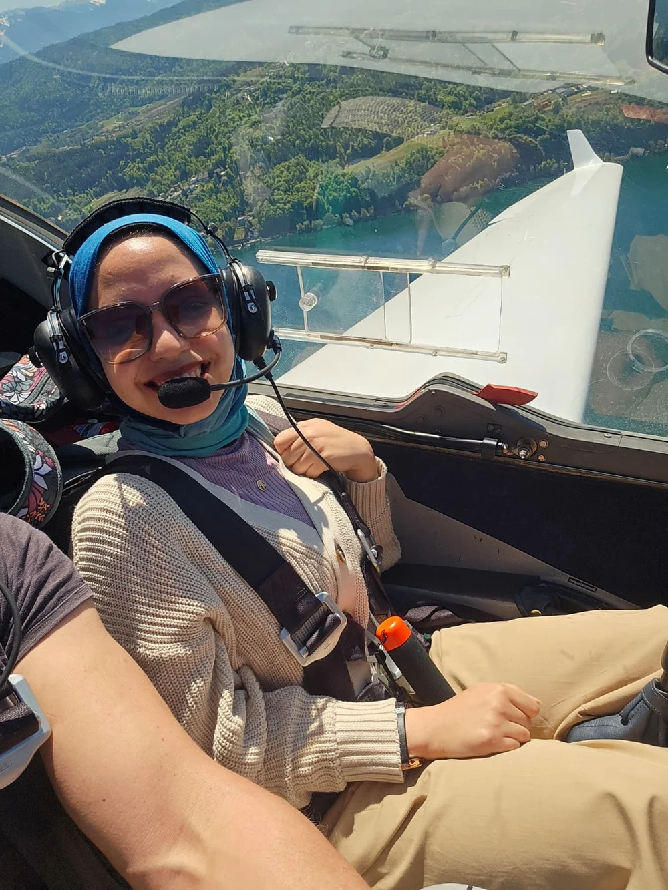
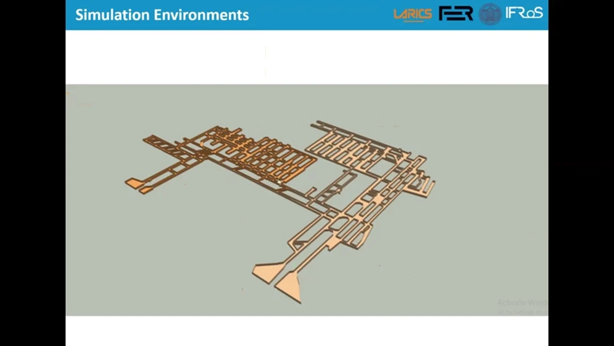
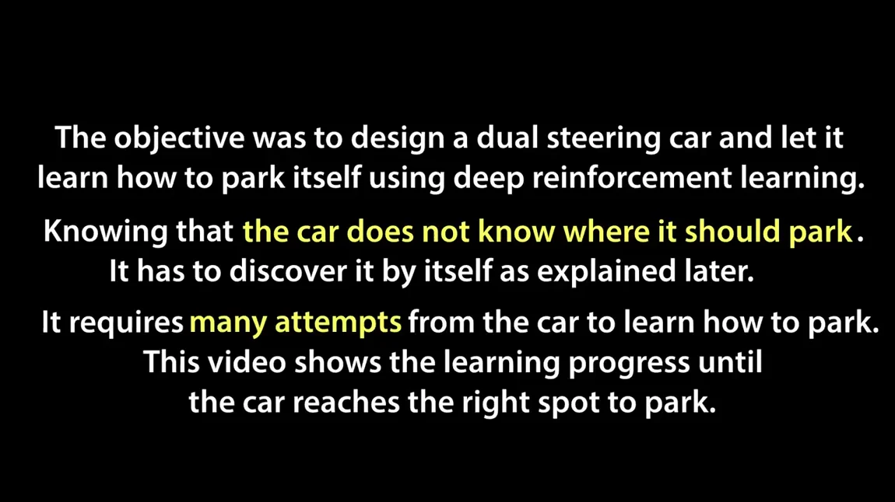

Industry · Avemoy FlexCo
Greenhouse AI & autonomous drone operations
Turning aerial greenhouse footage into crop monitoring data and connecting the vision pipeline to field hardware.
View case studyNada Fahim · Klagenfurt, Austria
I’m an AI software developer and robotics researcher. I build computer vision pipelines for real hardware and study how robots explore, perceive, and coordinate.

Field deployments, robotics research, and hands-on engineering.

Industry · Avemoy FlexCo
Turning aerial greenhouse footage into crop monitoring data and connecting the vision pipeline to field hardware.
View case study
Research · IFRoS master’s thesis
Coordinating multiple UAVs to explore an unknown environment and inspect targets of interest.
View case study
Engineering · BSc graduation project
Comparing Q-learning and PPO for autonomous parking and crash avoidance on a dual-steering prototype.
View case studyIEEE ICUAS · 2025
IEEE NILES · 2021
AICV · 2020
University of Girona & University of Zagreb · 2024
Nile University · 2022 · Magna Cum Laude
Avemoy FlexCo
Lead development of computer vision and software pipelines for greenhouse monitoring, with hands-on integration across Linux edge devices, drone hardware, and web interfaces.
Alpen-Adria University Klagenfurt
Taught Control of Autonomous Systems and Vision-Based Position Estimation to master’s students.
ETH Zürich · Autonomous Systems Lab
Led a project on learned alignment of dense 3D radar scans and developed a CNN-based model for 6-DoF pose estimation.
SESC Research Center
Worked on soft pneumatic actuators for a sea turtle-inspired robot, including structural analysis and computational fluid dynamics.
For work in applied AI, robotics software, or autonomous systems.